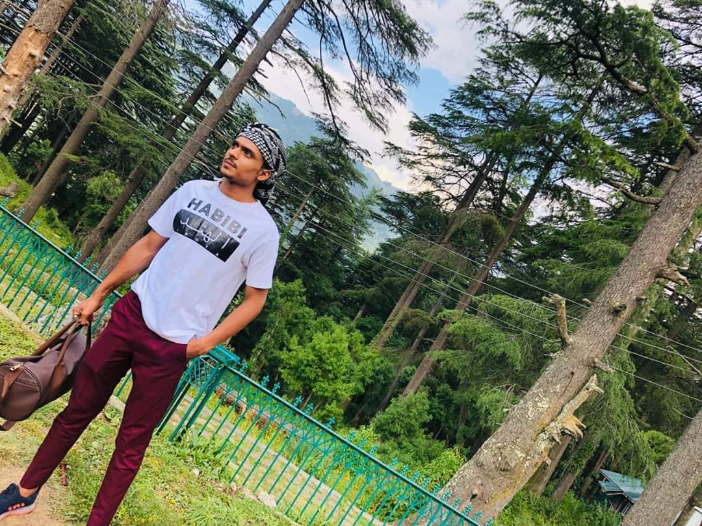

WELCOME TO MY WORLD
I'm an Entrepreneur, Celebrity Manager, Peripatetic and Social Media Expert. My journey was solitary and arduous to this dias, at this point I want to ameliorate the situation of people who are virtuous and worry.

WHAT WE DO
SOCIAL MEDIA MANAGEMENT
PUBLIC RELATION MANAGEMENT
PRESS AND PUBLICATION MANAGEMENT
REPUTATION MANAGEMENT
BRANDIND AND MARKETING
CELEBRITIES MANAGEMENT
Recent Travel
Live with no excuses and travel with no regretsKASHMIR
I flew to Kashmir a year ago. It was a 18 day trip. We stayed at many hotels in Pahalgam , Gulmarg , Tangmarg and very near to Dal lake. I could see the lakes and beautiful mountains from my hotel room.I have visited many places in and out of India. But by far this has been the most beautiful place I have ever visited.
I have visited many places in and out of India. But by far this has been the most beautiful place I have ever visited.Kashmir is a picturesque place. The beauty of the landscapes along with the cold breeze is just awesome.A lot of houseboats are available on dal lake. I took a canoe ride on the lake.
The people are extremely friendly. I saw questions on Google whether it is safe to visit or not. I found the place to be very safe.There are various places were we can ride on horses and enjoy mountain horse riding .We did not experience any security issues at all. There was a long security check at the airport while departing and that’s it!
MALDIVES
Relaxing in the Maldives: The Maldives conjure up images of pristine beaches, reef-ringed atolls, and luxurious bungalows on the water, where lucky guests can observe fish through glass floors and jump into the sea from their deck.This island nation has always been on my “bucket list,” so when I decided to visit Sri Lanka and Dubai last month, the Maldives was a logical and obvious addition to my itinerary.Especially, since there’s now a budget travel scene in the country.In 2016, the Maldivian government allowed locals to open their own guesthouses and restaurants to tourists. Whereas before travelers were limited to the resort islands, now they can visit and stay on any local island they choose to. Suddenly, homestays, hotels, and guesthouses have started popping up everywhere!It was a momentous shift in policy that finally allowed locals a piece of the economic tourist pie.Though I wanted to experience everyday life, the aforementioned idyllic images rippled through my mind, and there was no way I could miss a chance at experiencing that. Splitting my nine-day visit into two parts, I decided to spend four days in a resort and five days on the “real” islands.
With a friend in tow, I landed at the Cinnamon Hakuraa Huraa resort, 150 km south of the capital, Malé. Like all resorts, the hotel is on its own private island that boasts over water bungalows, their own restaurant, bar, spa, and operated tours. (And, like most resorts here, meals and drinks are included in the cost of the room.) Cinnamon is on the lower end of the price spectrum .As I was itching for an overdue vacation and work detox, a tropical island with limited Internet and a friend whose job it was to keep me from working.I spent my days trying not to burn myself on the beach, reading books (I highly recommend A Year of Living Danishly by Helen Russell), and drinking wine, stuffing my face, retiring for more reading and maybe a movie. Life on the island was easy. In the resort bubble, you don’t have to worry about getting around, meals, or what to do.The staff was super friendly, they knew how to make a good drink, and there was always food around. Meals were buffet style (unless you paid extra for the romantic crab restaurant or the lunchtime cooking class, which I did. See the awesome meal I cooked in the picture below).Taking advantage of some of the hotel’s tours, we went dolphin watching (so many dolphins!), snorkeled each day,
Since resorts in the country are geared toward families or couples, there are few solo travelers or non-couples outside the dive resorts. (My friend and I were the only non-couple on the island.) I found there wasn’t a lot of guest interaction but since everywhere there is on vacation, I’m not surprised.But, after days, my friend and I were both a bit ready to move on. I can only take vacation life for a few days before I get bored. The high life was what I thought it would be — relaxing opulence — but I was itching to see the real Maldives, life on the local islands, and talk to a few people!After returning to Malé and seeing my friend off at the airport, I hopped into a speedboat and headed to Maafushi, ground zero for the Maldives’ burgeoning independent travel industry, to start my island-hopping adventure.But Maafushi is good for a few things: diving, snorkeling, and acting as a launching pad to prettier, quieter islands like Gulhi and Fulidhoo.I escaped to Mahibadhoo. Kristin, our amazing solo female travel writer, stayed there a few years ago, and so I was eager to visit and check out the Amazing Noovilu, praised as “possibly the best guesthouse in the Maldives.” (It was really nice. A little expensive for my taste but the service, food, and activities offered by the staff was resort quality. Incredible attention to detail and I recommend staying there.
It was clean (local women volunteer to clean the island once a week), and the buildings were more colorful, featuring a rainbow of pastel-colored structures. There was more life here (I watched local soccer games each night), and, overall, the vibe was just nicer! The island, despite having speedboat access to Malé, has escaped (for now) the mass development of Maafushi. Though it doesn’t have a “bikini beach” (as the beaches for foreigners are called), there is good snorkeling right off shore (which is what I did), and it’s a launching pad for day trips to deserted atolls, sandbars, and quieter islands like Dhanbidhoo, Kalhaidhoo, and Isdhoo.Though the islands the locals inhabit are adding guesthouses, they frequently aren’t set up for tourists. Ferry service is infrequent to all but a couple of the islands, and most don’t have many restaurants, or even beaches to lay on. There are a couple reasons for this.First, bikini beaches exist for tourists. The Maldives is a Muslim country and, while there are public beaches, you need to be covered up for them. Most of the local islands don’t have white sandy beaches, so many built special ones just for the tourists that are hidden from view and visitors can be more scantily dressed (hence the bikini name).We think of the Maldives as a budget busting, high end place but they don’t have to be. The country is cheaper than some of the popular destinations in the Caribbean or even Southeast Asia! One day I hope return and spend more time island-hopping. There’s more I want to see and do here. I highly recommend visiting the Maldives before the islands become too overdeveloped, the beaches get swallowed up by the sea (climate change and coral bleaching were both hot topics with the locals I spoke with), or the world catches on to how budget friendly the country really is.
KERALA
In November 2017, my friend and I visited Wayanad in Kerala. Wayanad lies near the borders of three states of Karnataka, Tamil Nadu and Kerala.So, it was decided overnight that we want to visit Wayanad and like young explorers we began our trip early in the morning!
We began the trip from Mysore to Wayanad early in the morning. Mornings in Mysuru are so beautiful especially at Infosys campus. The trees,the roads,the views with lovely sky and its hues of pink looked absolutely stunning. The road went through the dense Bandipur forest where we could see herds of deers,monkeys and an elephant or two.

{kind=link}
{kind=link}
{kind=link}
{kind=link}
{kind=link}
{kind=link}
{kind=link}
{kind=link}
After reaching Wayanad the land of beauty, the first two places visited by us were Karlad Lake and Banasura Dam which are approximately 50 kms from Sulthanbathery. We travelled in an auto, the roads were a little too tipsy and broken because of the recent floods and the ride was becoming tiresome. As every Indian would suggest, we started playing Antakshari to lighten our mood. The auto driver was a Malayali. He was pretty bored of driving as well so eventually, he joined us too! We would sing a song in Hindi and then he would sing one in Malayali! It was so much fun.
{kind=link}
ACTIVE USERS
CURRENT CLIENTS
FINISHED PROJECTS
SATISFIED CELEBS